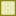

<!doctype html>
<html lang="en">
    <head>
        <meta charset="utf-8">
        <meta http-equiv="X-UA-Compatible" content="IE=edge">
        <meta name="viewport" content="initial-scale=1,user-scalable=no,maximum-scale=1,width=device-width">
        <meta name="mobile-web-app-capable" content="yes">
        <meta name="apple-mobile-web-app-capable" content="yes">
        <link rel="stylesheet" href="css/leaflet.css">
        <link rel="stylesheet" href="css/qgis2web.css"><link rel="stylesheet" href="css/fontawesome-all.min.css">
        <link rel="stylesheet" href="css/leaflet-control-geocoder.Geocoder.css">
        <style>
        html, body, #map {
            width: 100%;
            height: 100%;
            padding: 0;
            margin: 0;
        }
        </style>
        <title></title>
    </head>
    <body>
        <div id="map">
        </div>
        <script src="js/qgis2web_expressions.js"></script>
        <script src="js/leaflet.js"></script>
        <script src="js/leaflet.rotatedMarker.js"></script>
        <script src="js/leaflet.pattern.js"></script>
        <script src="js/leaflet-hash.js"></script>
        <script src="js/Autolinker.min.js"></script>
        <script src="js/rbush.min.js"></script>
        <script src="js/labelgun.min.js"></script>
        <script src="js/labels.js"></script>
        <script src="js/leaflet-control-geocoder.Geocoder.js"></script>
        <script src="data/Limitedomunicpio_1.js"></script>
        <script src="data/Macro_Japi_Cristais_2.js"></script>
        <script src="data/Macro_Urbana_Oeste_3.js"></script>
        <script src="data/Macro_Urbana_Centro_4.js"></script>
        <script src="data/Macro_Rural_Mananciais_5.js"></script>
        <script>
        var map = L.map('map', {
            zoomControl:true, maxZoom:28, minZoom:1
        })
        var hash = new L.Hash(map);
        map.attributionControl.setPrefix(' <a href="https://leafletjs.com" title="A JS library for interactive maps">Leaflet</a> &middot; <a>Catarina Bortoletto, Maria Eloisa Véras, Mariana Urrestarazu, Natalia Peregrino</a>');
        var autolinker = new Autolinker({truncate: {length: 30, location: 'smart'}});
        var bounds_group = new L.featureGroup([]);
        function setBounds() {
            if (bounds_group.getLayers().length) {
                map.fitBounds(bounds_group.getBounds());
            }
        }
        map.createPane('pane_GoogleMaps_0');
        map.getPane('pane_GoogleMaps_0').style.zIndex = 400;
        var layer_GoogleMaps_0 = L.tileLayer('https://mt1.google.com/vt/lyrs=y&x={x}&y={y}&z={z}', {
            pane: 'pane_GoogleMaps_0',
            opacity: 0.675,
            //attribution: '<a href="https://www.google.at/permissions/geoguidelines/attr-guide.html">Map data ©2015 Google</a>',
            minZoom: 1,
            maxZoom: 28,
            minNativeZoom: 0,
            maxNativeZoom: 20
        });
        layer_GoogleMaps_0;
        map.addLayer(layer_GoogleMaps_0);
        function pop_Limitedomunicpio_1(feature, layer) {
            var popupContent = '<table>\
                    <tr>\
                        <td colspan="2">' + (feature.properties['NM_MUNICIP'] !== null ? autolinker.link(feature.properties['NM_MUNICIP'].toLocaleString()) : '') + '</td>\
                    </tr>\
                    <tr>\
                        <td colspan="2">' + (feature.properties['CD_GEOCMU'] !== null ? autolinker.link(feature.properties['CD_GEOCMU'].toLocaleString()) : '') + '</td>\
                    </tr>\
                </table>';
            layer.bindPopup(popupContent, {maxHeight: 400});
        }

        function style_Limitedomunicpio_1_0() {
            return {
                pane: 'pane_Limitedomunicpio_1',
                opacity: 1,
                color: 'rgba(222,0,0,1.0)',
                dashArray: '',
                lineCap: 'square',
                lineJoin: 'bevel',
                weight: 4.0,
                fillOpacity: 0,
                interactive: true,
            }
        }
        map.createPane('pane_Limitedomunicpio_1');
        map.getPane('pane_Limitedomunicpio_1').style.zIndex = 401;
        map.getPane('pane_Limitedomunicpio_1').style['mix-blend-mode'] = 'normal';
        var layer_Limitedomunicpio_1 = new L.geoJson(json_Limitedomunicpio_1, {
            attribution: '',
            interactive: true,
            dataVar: 'json_Limitedomunicpio_1',
            layerName: 'layer_Limitedomunicpio_1',
            pane: 'pane_Limitedomunicpio_1',
            onEachFeature: pop_Limitedomunicpio_1,
            style: style_Limitedomunicpio_1_0,
        });
        bounds_group.addLayer(layer_Limitedomunicpio_1);
        map.addLayer(layer_Limitedomunicpio_1);
        function pop_Macro_Japi_Cristais_2(feature, layer) {
            var popupContent = '<table>\
                    <tr>\
                        <td colspan="2">' + (feature.properties['id'] !== null ? autolinker.link(feature.properties['id'].toLocaleString()) : '') + '</td>\
                    </tr>\
                </table>';
            layer.bindPopup(popupContent, {maxHeight: 400});
        }

        function style_Macro_Japi_Cristais_2_0() {
            return {
                pane: 'pane_Macro_Japi_Cristais_2',
                opacity: 1,
                color: 'rgba(31,78,31,1.0)',
                dashArray: '',
                lineCap: 'butt',
                lineJoin: 'miter',
                weight: 2.0, 
                fill: true,
                fillOpacity: 1,
                fillColor: 'rgba(120,200,135,0.4235294117647059)',
                interactive: true,
            }
        }
        map.createPane('pane_Macro_Japi_Cristais_2');
        map.getPane('pane_Macro_Japi_Cristais_2').style.zIndex = 402;
        map.getPane('pane_Macro_Japi_Cristais_2').style['mix-blend-mode'] = 'normal';
        var layer_Macro_Japi_Cristais_2 = new L.geoJson(json_Macro_Japi_Cristais_2, {
            attribution: '',
            interactive: true,
            dataVar: 'json_Macro_Japi_Cristais_2',
            layerName: 'layer_Macro_Japi_Cristais_2',
            pane: 'pane_Macro_Japi_Cristais_2',
            onEachFeature: pop_Macro_Japi_Cristais_2,
            style: style_Macro_Japi_Cristais_2_0,
        });
        bounds_group.addLayer(layer_Macro_Japi_Cristais_2);
        map.addLayer(layer_Macro_Japi_Cristais_2);
        function pop_Macro_Urbana_Oeste_3(feature, layer) {
            var popupContent = '<table>\
                    <tr>\
                        <td colspan="2">' + (feature.properties['id'] !== null ? autolinker.link(feature.properties['id'].toLocaleString()) : '') + '</td>\
                    </tr>\
                    <tr>\
                        <td colspan="2">' + (feature.properties['descricao'] !== null ? autolinker.link(feature.properties['descricao'].toLocaleString()) : '') + '</td>\
                    </tr>\
                </table>';
            layer.bindPopup(popupContent, {maxHeight: 400});
        }

        function style_Macro_Urbana_Oeste_3_0() {
            return {
                pane: 'pane_Macro_Urbana_Oeste_3',
                opacity: 1,
                color: 'rgba(137,135,27,1.0)',
                dashArray: '',
                lineCap: 'butt',
                lineJoin: 'miter',
                weight: 3.0, 
                fill: true,
                fillOpacity: 1,
                fillColor: 'rgba(204,204,73,0.38823529411764707)',
                interactive: true,
            }
        }
        map.createPane('pane_Macro_Urbana_Oeste_3');
        map.getPane('pane_Macro_Urbana_Oeste_3').style.zIndex = 403;
        map.getPane('pane_Macro_Urbana_Oeste_3').style['mix-blend-mode'] = 'normal';
        var layer_Macro_Urbana_Oeste_3 = new L.geoJson(json_Macro_Urbana_Oeste_3, {
            attribution: '',
            interactive: true,
            dataVar: 'json_Macro_Urbana_Oeste_3',
            layerName: 'layer_Macro_Urbana_Oeste_3',
            pane: 'pane_Macro_Urbana_Oeste_3',
            onEachFeature: pop_Macro_Urbana_Oeste_3,
            style: style_Macro_Urbana_Oeste_3_0,
        });
        bounds_group.addLayer(layer_Macro_Urbana_Oeste_3);
        map.addLayer(layer_Macro_Urbana_Oeste_3);
        function pop_Macro_Urbana_Centro_4(feature, layer) {
            var popupContent = '<table>\
                    <tr>\
                        <td colspan="2">' + (feature.properties['id'] !== null ? autolinker.link(feature.properties['id'].toLocaleString()) : '') + '</td>\
                    </tr>\
                </table>';
            layer.bindPopup(popupContent, {maxHeight: 400});
        }

        function style_Macro_Urbana_Centro_4_0() {
            return {
                pane: 'pane_Macro_Urbana_Centro_4',
                opacity: 1,
                color: 'rgba(120,39,85,1.0)',
                dashArray: '',
                lineCap: 'butt',
                lineJoin: 'miter',
                weight: 3.0, 
                fill: true,
                fillOpacity: 1,
                fillColor: 'rgba(204,110,160,0.43529411764705883)',
                interactive: true,
            }
        }
        map.createPane('pane_Macro_Urbana_Centro_4');
        map.getPane('pane_Macro_Urbana_Centro_4').style.zIndex = 404;
        map.getPane('pane_Macro_Urbana_Centro_4').style['mix-blend-mode'] = 'normal';
        var layer_Macro_Urbana_Centro_4 = new L.geoJson(json_Macro_Urbana_Centro_4, {
            attribution: '',
            interactive: true,
            dataVar: 'json_Macro_Urbana_Centro_4',
            layerName: 'layer_Macro_Urbana_Centro_4',
            pane: 'pane_Macro_Urbana_Centro_4',
            onEachFeature: pop_Macro_Urbana_Centro_4,
            style: style_Macro_Urbana_Centro_4_0,
        });
        bounds_group.addLayer(layer_Macro_Urbana_Centro_4);
        map.addLayer(layer_Macro_Urbana_Centro_4);
        function pop_Macro_Rural_Mananciais_5(feature, layer) {
            var popupContent = '<table>\
                    <tr>\
                        <td colspan="2">' + (feature.properties['id'] !== null ? autolinker.link(feature.properties['id'].toLocaleString()) : '') + '</td>\
                    </tr>\
                </table>';
            layer.bindPopup(popupContent, {maxHeight: 400});
        }

        function style_Macro_Rural_Mananciais_5_0() {
            return {
                pane: 'pane_Macro_Rural_Mananciais_5',
                opacity: 1,
                color: 'rgba(17,17,161,1.0)',
                dashArray: '',
                lineCap: 'butt',
                lineJoin: 'miter',
                weight: 3.0, 
                fill: true,
                fillOpacity: 1,
                fillColor: 'rgba(73,93,220,0.2823529411764706)',
                interactive: true,
            }
        }
        map.createPane('pane_Macro_Rural_Mananciais_5');
        map.getPane('pane_Macro_Rural_Mananciais_5').style.zIndex = 405;
        map.getPane('pane_Macro_Rural_Mananciais_5').style['mix-blend-mode'] = 'normal';
        var layer_Macro_Rural_Mananciais_5 = new L.geoJson(json_Macro_Rural_Mananciais_5, {
            attribution: '',
            interactive: true,
            dataVar: 'json_Macro_Rural_Mananciais_5',
            layerName: 'layer_Macro_Rural_Mananciais_5',
            pane: 'pane_Macro_Rural_Mananciais_5',
            onEachFeature: pop_Macro_Rural_Mananciais_5,
            style: style_Macro_Rural_Mananciais_5_0,
        });
        bounds_group.addLayer(layer_Macro_Rural_Mananciais_5);
        map.addLayer(layer_Macro_Rural_Mananciais_5);
        var osmGeocoder = new L.Control.Geocoder({
            collapsed: true,
            position: 'topleft',
            text: 'Search',
            title: 'Testing'
        }).addTo(map);
        document.getElementsByClassName('leaflet-control-geocoder-icon')[0]
        .className += ' fa fa-search';
        document.getElementsByClassName('leaflet-control-geocoder-icon')[0]
        .title += 'Search for a place';
        var baseMaps = {};
        L.control.layers(baseMaps,{' Macrozona Rural de Manancial': layer_Macro_Rural_Mananciais_5,' Macrozona de Urbanização Consolidada': layer_Macro_Urbana_Centro_4,' Macrozona de Expansão e Qualificação da Urbanização': layer_Macro_Urbana_Oeste_3,' Macrozona de Proteção das Serras': layer_Macro_Japi_Cristais_2,' Limite do município': layer_Limitedomunicpio_1,"Google Maps": layer_GoogleMaps_0,},{collapsed:false}).addTo(map);
        setBounds();
        </script>
    </body>
</html>
